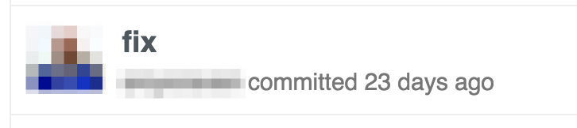

your git skills
your git skills
Ben Limmer
@blimmer
December 2, 2015
Ben Limmer
@blimmer
December 2, 2015
We'll stick mostly to using porcelain commands, but reading the plumbing docs is highly recommended.
It’s a historical document, valuable in its own right, and shouldn’t be tampered with. From this angle, changing the commit history is almost blasphemous; you’re lying about what actually transpired. So what if there was a messy series of merge commits? That’s how it happened, and the repository should preserve that for posterity.


Some of these are, of course, shown in jest and the commit messages could be improved.
This really is a record of exactly what happened.
However, the historical record can be difficult to traverse.
You wouldn’t publish the first draft of a book, and the manual for how to maintain your software deserves careful editing. This is the camp that uses tools like rebase and filter-branch to tell the story in the way that’s best for future readers.


I, personally, believe in School 1.
But we need to understand what it means to "rebase" before we go any further.
A merge occurs when you want to integrate two branches together.

When you merge experiment into master, it performs a three-way merge between
the two latest branch snapshots (C3 and C4) and the most recent common ancestor
of the two (C2), creating a new snapshot (and commit).

This is fine, but we've produced another commit which might not be extremely valuable.
A rebase takes one or more patches and reapplies it on top of new commits on
the destination branch.
When you rebase experiment off of master, it works by going to the common
ancestor of the two branches (C2), generating diffs for each subsequent commit
(C4), and applies the commit to the new commit on master.

Now we can fast-forward merge to master, giving us

The result of the merge and the rebase are functionally the same, except the rebase history looks more linear.
But how does this get rid of "meaningless" commits?
It doesn't directly, but an interactive rebase does.
Allows you to "edit" each commit's contents or message as you re-apply each commit on top of the ancestor branch.
While working on a feature branch, you likely have a commit history like this

However, very little actually changed for this feature.

Imagine bisecting this and finding that this was the offending commit

In the example above, there were two problems (IMO):
How do we fix it?
Before merging the feature into develop, the dev could have done an interactive rebase in order to "squash" commits.
git checkout develop
git pull origin develop
git checkout feature/x
git rebase develop
This brings you to a screen where you can decide what to do with your commits

In this example, I want to squash everything down to 1 commit because that's the only valuable history on this branch.

r
Since I said I wanted to reword the first commit, I'm brought to this screen

Now that I've reworded, I'm shown a final summary of happened

We're left with one meaningful commit message!

When re-writing history (e.g. rebasing) can go wrong
Imagine I'm working on a feature branch and it has 3 commits on origin (meaning I've pushed the branch to GitHub).
| Commit Hash | Message | Author |
|---|---|---|
| a | Initial Implementation | blimmer |
| b | Test Fixes | blimmer |
| c | PR Updates | blimmer |
I decide to rebase those commits into one commit. However, the designer on my team has checked out my feature branch, added a commit, and pushed it to origin, so the history on origin looks like this.
| Commit Hash | Message | Author |
|---|---|---|
| a | Initial Implementation | blimmer |
| b | Test Fixes | blimmer |
| c | PR Updates | blimmer |
| d | Fonts & Colors | krsmcd |
However, if I don't pull from origin first, do an interactive rebase to squash my three commits into one, and force-push to origin, origin will now have this history.
| Commit Hash | Message | Author |
|---|---|---|
| f | My Squashed Commit | blimmer |
Doh! I just lost the designer's commit. Let's hope he still has that commit locally so we can do some git-fu to get it back.

There are two things to take from this accident.
--force-with-lease to ensure your local remote ref is the
same as the origin remote ref (e.g. no one else has pushed commits to your branch)If I would have used
git push --force-with-lease
I would have seen this message
git push --force-with-lease
To /tmp/repo
[rejected] feature/x -> feature/x (stale info)
error: failed to push some refs to '/tmp/repo'
That would have told me - oh crap, someone else was working on this branch!
Ok, it sounds scary but it's really not that bad. 9/10 times I'm working on my own on a branch. If I'm not, I just wait to do any rebasing until I'm ready to merge to develop.
Kinda, because most of us don't use the git flow plugin.
But, from a high level, we have 3-4 kinds of branches.
Let me show you my process.
I always start off the same way - by creating a branch (either from epic or develop).
git checkout -b feature/my-new-feature
WIP commits and all! This branch is yours and you should track work as it makes sense. Make as many commits as you want, even if they don't have meaning yet.
Squash all meaningless commits. This doesn't mean "every PR must have 1 commit".
It simply means that if the diff stored in history by a commit isn't useful on its own, squash it into some other commit that carries meaning. Remember you can re-order commits in a rebase!
Rebase your branch off of the ancestor branch (usually develop), so only a fast-forward merge will occur.
Merge your freshly rebased code into develop or the epic branch.
Via GitHub or the command line.
git checkout develop
git merge feature/my-new-feature
git commit --amend
git commit --amend
It's the little brother of an interactive rebase
git commit --amend
Takes any staged changes and rolls it into the previous commit. Great for "PR Notes" commits.
This still rewrites history.
| Commit Hash | Message | Author |
|---|---|---|
| f | My Squashed Commit | blimmer |
... make some changes ...
git add .
git commit --amend
| Commit Hash | Message | Author |
|---|---|---|
| e | My Squashed Commit | blimmer |
git add -p
another tool to use instead of
git add .
steps through each file patch by patch, staging as you go.
Imagine a change at the top and bottom of a file, but they're not related to the same change.
blimmer:~/code/talks/git (master ✗)
› git add -p
› git add -p
diff --git a/README.md b/README.md
index 1a9c834..d25f0d6 100644
--- a/README.md
+++ b/README.md
@@ -1,5 +1,7 @@
# 1-Up Your Git Skills
+A change at the top
+
A talk given at the Ibotta Engineering Lunch and Learn series on December 2, 2015.
This presentation was created with [reveal-ck](https://github.com/jedcn/reveal-ck).
Stage this hunk [y,n,q,a,d,/,j,J,g,e,?]?
@@ -16,3 +18,5 @@ If you want to run this project locally:
3. Run `reveal-ck generate`
4. Run `reveal-ck serve`
5. Visit http://localhost:10000
+
+A change at the bottom
blimmer:~/code/talks/git (master ✗)
› st
On branch master
Your branch is up-to-date with 'origin/master'.
Changes to be committed:
(use "git reset HEAD <file>..." to unstage)
modified: README.md
Changes not staged for commit:
(use "git add <file>..." to update what will be committed)
(use "git checkout -- <file>..." to discard changes in working directory)
modified: README.md
Demo time
ok, that took some time...
but what history would you rather view if you need to go back through it?


git help <command-name>

Ben Limmer
@blimmer
hello@benlimmer.com
I was heavily influenced by the Git Book, which is licensed under the Creative Commons Attribution Non Commercial Share Alike 3.0 license, thus this presentation is also subject to the same license.
Don't freak out - that just means that you need to attribute it if you use it, indicate if changes were made and distribute any remix of this work under the same license.
I reused some of the awesome diagrams and have made minor changes to the description of how rebases are applied.